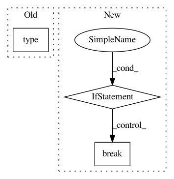

1eb369ae3a1865789f5809bec59f066ac1cbe58d,syft/workers/base.py,BaseWorker,recv_msg,#BaseWorker#Any#,282
Before Change
)
// Step 2: route message to appropriate function
response = self._message_router[type(msg)](msg)
// Step 3: Serialize the message to simple python objects
bin_response = sy.serde.serialize(response, worker=self)
After Change
response = None
for handler in self.message_handlers:
if handler.supports(msg):
response = handler.handle(msg)
break
// TODO(karlhigley): Raise an exception if no handler is found
// Step 3: Serialize the message to simple python objects
bin_response = sy.serde.serialize(response, worker=self)
return bin_response
In pattern: SUPERPATTERN
Frequency: 3
Non-data size: 3
Instances
Project Name: OpenMined/PySyft
Commit Name: 1eb369ae3a1865789f5809bec59f066ac1cbe58d
Time: 2020-06-03
Author: kmhigley@gmail.com
File Name: syft/workers/base.py
Class Name: BaseWorker
Method Name: recv_msg
Project Name: SPFlow/SPFlow
Commit Name: d286c4aa54aa5dd73b544a6f969960900fa4a355
Time: 2018-03-26
Author: molina@cs.tu-darmstadt.de
File Name: src/spn/algorithms/StructureLearning.py
Class Name:
Method Name: Prune
Project Name: BindsNET/bindsnet
Commit Name: b6240c06fb49020e2d51703a1fcfddba7e27297d
Time: 2019-06-21
Author: djsaunde@umass.edu
File Name: bindsnet/network/network.py
Class Name: Network
Method Name: run